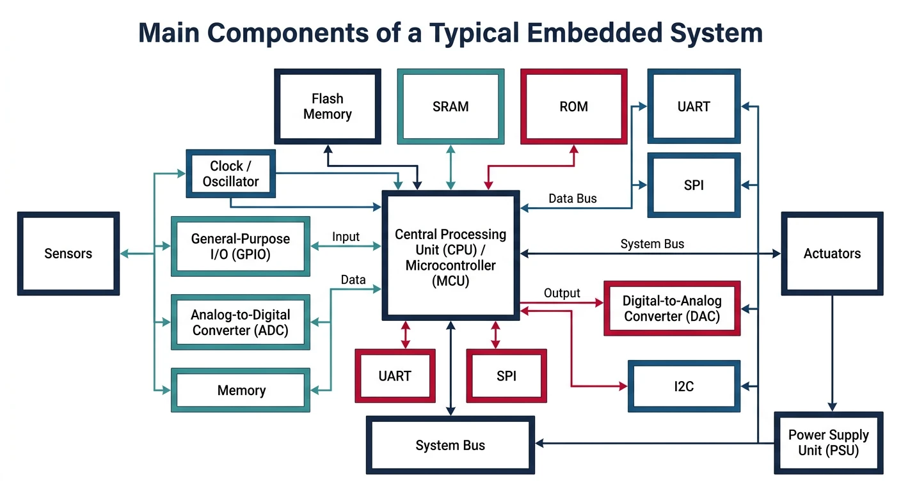
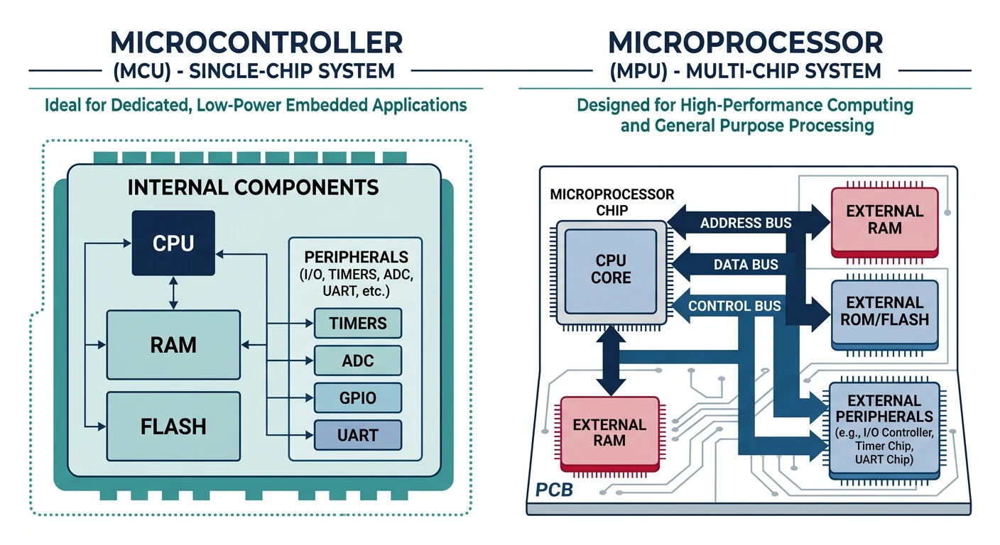
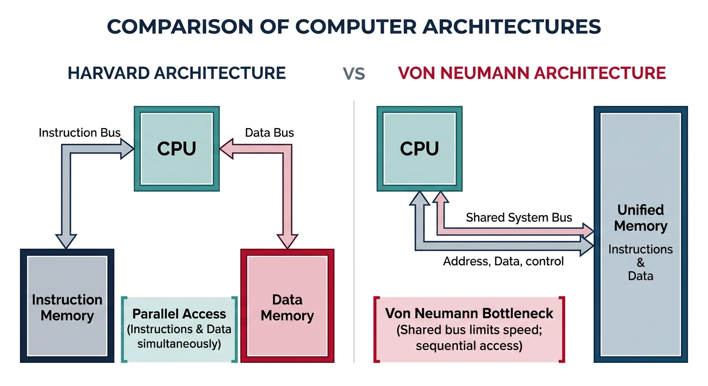
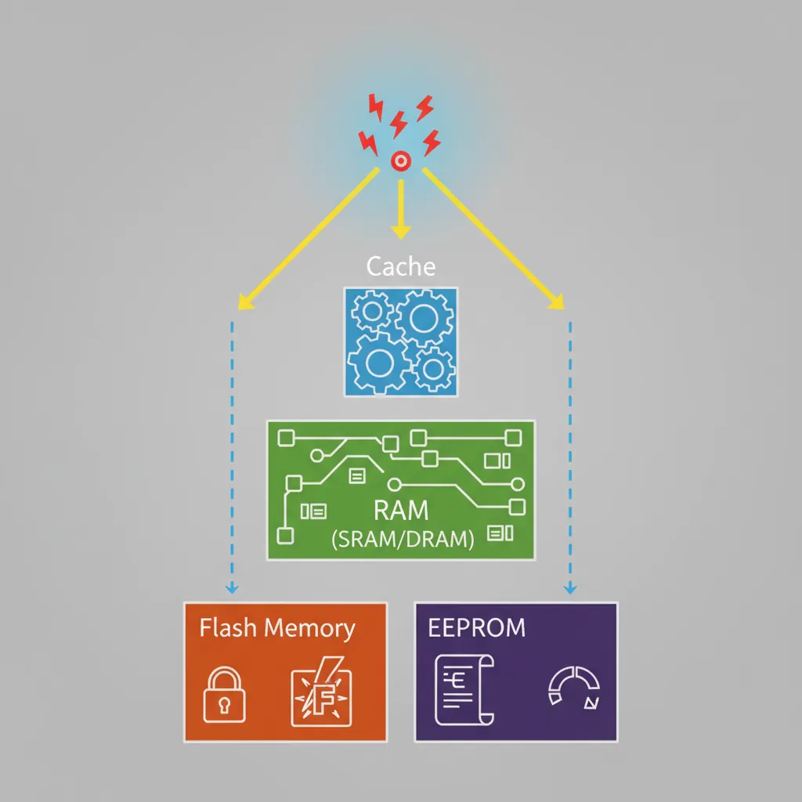
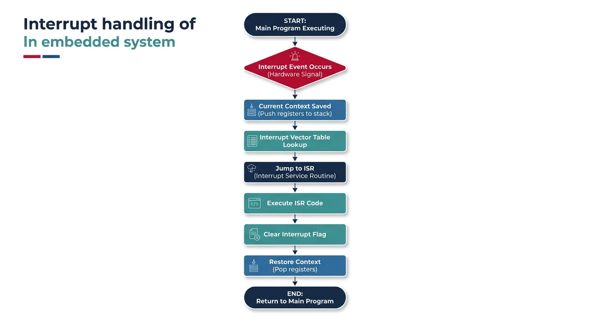

Introduction: What Are Embedded Systems?
Embedded Systems Mastery
Fundamentals & Architecture
Microcontrollers, memory, interruptsSTM32 & ARM Cortex-M Development
ARM architecture, peripherals, HALRTOS Fundamentals (FreeRTOS/Zephyr)
Task management, scheduling, synchronizationCommunication Protocols Deep Dive
UART, SPI, I2C, CAN, USBEmbedded Linux Fundamentals
Linux kernel, userspace, filesystemU-Boot Bootloader Mastery
Boot process, configuration, customizationLinux Device Drivers
Character, block, network driversLinux Kernel Customization
Kernel configuration, modules, debuggingAndroid System Architecture
Android layers, services, frameworkAndroid HAL & Native Development
HAL interfaces, NDK, JNIAndroid BSP & Kernel
BSP development, kernel integrationDebugging & Optimization
JTAG, GDB, profiling, optimizationAUTOSAR & EB Tresos
AUTOSAR architecture, MCAL, MPU protectionAn embedded system is a computer system designed to perform dedicated functions within a larger mechanical or electronic system. Unlike general-purpose computers, embedded systems are optimized for specific tasks—from controlling your car's engine to managing a smart thermostat.
Embedded systems are everywhere: your microwave, washing machine, smartphone, car (with 50-100+ embedded controllers), medical devices, industrial robots, and the aircraft autopilot. The global embedded systems market exceeds $100 billion annually, making this one of the most important domains in computing.

- Task-specific: Designed for one or a few dedicated functions
- Resource-constrained: Limited memory, processing power, and energy
- Real-time requirements: Must respond within strict timing deadlines
- Reliability: Must operate continuously without crashes or reboots
- Cost-sensitive: Often produced in high volumes with tight margins
Microcontroller vs Microprocessor
Understanding the difference between microcontrollers (MCUs) and microprocessors (MPUs) is fundamental to embedded systems design. Both are integrated circuits that execute instructions, but their architecture and use cases differ significantly.

Microcontroller Architecture
A microcontroller is a self-contained "system on a chip" (SoC) that integrates:
- CPU core: The processing unit (e.g., ARM Cortex-M, AVR, PIC)
- Flash memory: Non-volatile storage for program code (typically 16KB to 2MB)
- SRAM: Volatile memory for runtime data (typically 4KB to 512KB)
- Peripherals: GPIO, timers, UART, SPI, I2C, ADC, DAC
- Clock system: Internal oscillators and PLLs
Popular Microcontroller Families
- STM32 (ARM Cortex-M): Industry standard, extensive ecosystem, 32-bit
- ESP32: WiFi/Bluetooth built-in, great for IoT projects
- ATmega328 (AVR): Powers Arduino Uno, beginner-friendly
- PIC: Microchip's family, popular in industrial applications
- Nordic nRF52: Low-power Bluetooth, wearables and sensors
Microprocessor Architecture
A microprocessor is primarily a CPU that requires external components:
- External RAM: DDR3/DDR4 memory modules (GBs of capacity)
- External storage: eMMC, SD card, NVMe for OS and data
- Support chips: Power management, memory controllers
- Higher performance: Complex instruction sets, caches, MMU
Popular Microprocessor Families
- ARM Cortex-A (A53, A72, A78): Smartphones, tablets, Raspberry Pi
- Qualcomm Snapdragon: Mobile SoCs with integrated GPU, DSP
- Intel Atom: Low-power x86 for embedded PCs
- RISC-V: Open-source ISA gaining traction
When to Use Which
- Real-time response is critical (motor control, safety systems)
- Power consumption must be minimal (battery-powered, always-on)
- Cost per unit is a major concern (high-volume production)
- Simple, dedicated functionality (sensors, actuators, basic UI)
- Instant boot time required (no OS loading)
- Running a full operating system (Linux, Android)
- Complex UI with graphics and touchscreen
- Network connectivity with full TCP/IP stack
- Multitasking with many simultaneous processes
- Large data processing or storage requirements
Processor Architectures
Harvard vs Von Neumann Architecture
These two fundamental architectures define how processors access instructions and data.

Von Neumann Architecture
Key characteristic: Single memory space for both instructions and data.
- Single bus: Instructions and data share the same memory bus
- Bottleneck: CPU can't fetch instruction while accessing data (Von Neumann bottleneck)
- Flexibility: Self-modifying code possible, simpler design
- Examples: x86 processors, ARM Cortex-A (at memory level)
Harvard Architecture
Key characteristic: Separate memory and buses for instructions and data.
- Parallel access: Can fetch instruction while reading/writing data
- Higher throughput: No bus contention, better performance
- Common in MCUs: Flash for code, SRAM for data
- Examples: ARM Cortex-M, AVR, PIC microcontrollers
Modified Harvard: Many modern processors use a hybrid approach—separate L1 caches for instructions and data (Harvard-style), but unified main memory (Von Neumann-style).
RISC vs CISC
Instruction set architecture (ISA) philosophies differ in how they approach CPU design:
RISC (Reduced Instruction Set Computer)
- Simple instructions: Execute in one clock cycle
- Load-store architecture: Only load/store access memory
- Many registers: Reduce memory access
- Fixed instruction length: Easier pipelining
- Compiler complexity: More instructions, simpler hardware
CISC (Complex Instruction Set Computer)
- Complex instructions: Single instruction can do multiple operations
- Memory operands: Instructions can operate directly on memory
- Variable instruction length: More compact code
- Fewer instructions: Hardware complexity trades for code density
- Modern x86: CISC externally, RISC-like execution internally
ARM Architecture Overview
ARM (Advanced RISC Machines) dominates embedded systems. Understanding ARM's processor families is essential:
- Cortex-A (Application): High-performance, runs Linux/Android, MMU included. Examples: A53, A72, A78
- Cortex-R (Real-time): Deterministic real-time, safety-critical systems. Examples: R4, R5, R52
- Cortex-M (Microcontroller): Low-power, cost-effective, no MMU. Examples: M0, M3, M4, M7, M33
Memory Types in Embedded Systems
Flash Memory (Program Storage)
Flash memory stores your program code. It's non-volatile (retains data without power) and can be electrically erased and reprogrammed.

- NOR Flash: Execute-in-place (XIP), random access, used for code storage
- NAND Flash: Higher density, sequential access, used for mass storage
- Endurance: Limited write cycles (typically 10,000-100,000)
- Typical sizes: 16KB to 2MB in MCUs
// Flash memory is read-only at runtime
// Code executes directly from Flash (XIP)
const uint32_t lookup_table[] = {0, 1, 4, 9, 16, 25}; // Stored in Flash
SRAM (Data Memory)
Static RAM is fast, volatile memory used for runtime data—variables, stack, and heap.
- Speed: Single clock cycle access
- Volatility: Loses data when power is removed
- No refresh: Unlike DRAM, doesn't need periodic refresh
- Typical sizes: 4KB to 512KB in MCUs
// SRAM stores runtime variables
uint32_t counter = 0; // Global variable in SRAM
uint8_t buffer[256]; // Array in SRAM
void function(void) {
uint32_t local_var = 10; // Stack (also SRAM)
}
DRAM & DDR Memory in SoC Systems
While microcontrollers use on-chip SRAM (kilobytes), System-on-Chip (SoC) platforms like the TI AM335x, i.MX6, or Snapdragon processors use external DRAM (megabytes to gigabytes) as their main system memory. Understanding the DRAM family and DDR generations is essential for anyone working with embedded Linux, Android, or application-class embedded systems.
SRAM vs DRAM—The Fundamental Difference
- SRAM (Static RAM): Uses 6 transistors per bit. No refresh needed. Fast (single-cycle access), but large and expensive per bit. Used for caches, on-chip MCU memory, and register files. Typical embedded sizes: 4KB–512KB.
- DRAM (Dynamic RAM): Uses 1 transistor + 1 capacitor per bit. Needs periodic refresh (every 64 ms) because the capacitor charge leaks. Much higher density and lower cost per bit, but requires a dedicated DRAM controller to manage refresh cycles, timing, and command sequences. Typical embedded sizes: 128MB–8GB.
DDR Generations—From DDR2 to LPDDR5X
DDR (Double Data Rate) SDRAM transfers data on both the rising and falling edges of the clock signal, effectively doubling the bandwidth compared to single data rate (SDR) SDRAM. Each generation improves bandwidth, reduces voltage, and increases density:
DDR Generation Comparison
| Standard | Voltage | Clock (MHz) | Transfer Rate | Prefetch | Typical Use |
|---|---|---|---|---|---|
| DDR2 | 1.8V | 200–533 | 400–1066 MT/s | 4n | Legacy industrial SoCs, AM1808 |
| DDR3 | 1.5V | 400–1066 | 800–2133 MT/s | 8n | AM335x (BeagleBone), i.MX6 |
| DDR3L | 1.35V | 400–1066 | 800–2133 MT/s | 8n | Low-power variants of DDR3 boards |
| DDR4 | 1.2V | 800–1600 | 1600–3200 MT/s | 8n | Raspberry Pi 5, i.MX8, Jetson |
| DDR5 | 1.1V | 2400–4000 | 4800–8000+ MT/s | 16n | High-performance servers, next-gen SoCs |
| LPDDR4/4X | 1.1V / 0.6V | 1600–2133 | 3200–4266 MT/s | 16n | Smartphones, Snapdragon, i.MX8M |
| LPDDR5 | 1.05V / 0.5V | 3200 | 6400 MT/s | 16n | Flagship mobile SoCs, automotive |
| LPDDR5X | 1.05V / 0.5V | 4267 | 8533 MT/s | 16n | AI accelerators, Dimensity 9300, Snapdragon 8 Gen 3 |
- MT/s (Megatransfers/second): The effective data rate. DDR3-1600 means 1600 million transfers per second, with an 800 MHz clock (double data rate).
- Prefetch (4n, 8n, 16n): Number of bits fetched per access from the internal DRAM array. Higher prefetch = wider internal bus = higher bandwidth without faster cells.
- CAS Latency (CL): Clock cycles between a read command and the first data output. Lower = faster, but tied to clock frequency.
- tRCD, tRP, tRAS: Row-to-column delay, row precharge time, row active time—the timing parameters that the DDR controller must be configured with. These vary by manufacturer and part number.
- LPDDR (Low Power DDR): Mobile-optimized variant with lower voltage, on-die termination, and deep power-down modes. Not pin-compatible with standard DDR.
- ECC (Error Correcting Code): Optional wider data bus (72 bits vs 64) that detects and corrects single-bit errors. Common in industrial/automotive but rare in consumer embedded.
// DDR3 timing parameters example (AM335x BeagleBone Black)
// These values are specific to the Kingston DDR3L chip used on BBB
// From: board/ti/am335x/board.c in U-Boot source
#include <asm/arch/ddr_defs.h>
const struct ddr_data ddr3_data = {
.datardsratio0 = MT41K256M16HA125E_RD_DQS,
.datawdsratio0 = MT41K256M16HA125E_WR_DQS,
.datafwsratio0 = MT41K256M16HA125E_PHY_FIFO_WE,
.datawrsratio0 = MT41K256M16HA125E_PHY_WR_DATA,
};
const struct cmd_control ddr3_cmd_ctrl_data = {
.cmd0csratio = MT41K256M16HA125E_RATIO,
.cmd0iclkout = MT41K256M16HA125E_INVERT_CLKOUT,
.cmd1csratio = MT41K256M16HA125E_RATIO,
.cmd1iclkout = MT41K256M16HA125E_INVERT_CLKOUT,
.cmd2csratio = MT41K256M16HA125E_RATIO,
.cmd2iclkout = MT41K256M16HA125E_INVERT_CLKOUT,
};
const struct emif_regs ddr3_emif_reg_data = {
.sdram_config = MT41K256M16HA125E_EMIF_SDCFG,
.ref_ctrl = MT41K256M16HA125E_EMIF_SDREF,
.sdram_tim1 = MT41K256M16HA125E_EMIF_TIM1,
.sdram_tim2 = MT41K256M16HA125E_EMIF_TIM2,
.sdram_tim3 = MT41K256M16HA125E_EMIF_TIM3,
.zq_config = MT41K256M16HA125E_ZQ_CFG,
.emif_ddr_phy_ctlr_1 = MT41K256M16HA125E_EMIF_READ_LATENCY,
};
EEPROM (Non-Volatile Data)
Electrically Erasable Programmable ROM stores configuration data that must survive power cycles. Unlike Flash memory which must be erased in large sectors (typically 4KB–128KB), EEPROM allows byte-level erase and write operations, making it ideal for storing small configuration values that change frequently during the device’s lifetime.
- Byte-erasable: Can erase and rewrite individual bytes without affecting neighboring data
- Slower writes: Typically 3–10 ms per byte (vs nanosecond reads)
- Higher endurance: Often 1 million write cycles (vs 10K–100K for Flash)
- Small capacity: Typically 256 bytes to 64KB in MCUs
- Asymmetric speed: Reads are fast (nanoseconds), but writes require an internal charge pump and are orders of magnitude slower
- Use cases: Calibration data, user settings, device IDs, boot configuration, error logs, counters
// Writing to internal EEPROM (STM32L0/L1 series)
#include "stm32l0xx_hal.h"
#define EEPROM_BASE 0x08080000
#define EEPROM_END 0x080807FF // 2KB EEPROM on STM32L053
void eeprom_write_halfword(uint32_t address, uint16_t value) {
HAL_FLASHEx_DATAEEPROM_Unlock();
HAL_FLASHEx_DATAEEPROM_Program(
FLASH_TYPEPROGRAMDATA_HALFWORD,
EEPROM_BASE + address,
value
);
HAL_FLASHEx_DATAEEPROM_Lock();
}
// Reading from internal EEPROM (direct memory-mapped access)
#include <stdint.h>
#define EEPROM_BASE 0x08080000
uint16_t eeprom_read_halfword(uint32_t address) {
// EEPROM is memory-mapped — read like any memory location
return *(__IO uint16_t *)(EEPROM_BASE + address);
}
uint8_t eeprom_read_byte(uint32_t address) {
return *(__IO uint8_t *)(EEPROM_BASE + address);
}
// Usage: restore calibration after power cycle
uint16_t saved_cal = eeprom_read_halfword(0x0000);
uint8_t device_id = eeprom_read_byte(0x0010);
Internal vs External EEPROM
EEPROM comes in two forms: internal EEPROM built into the MCU die, and external EEPROM chips connected via I2C or SPI. The choice depends on capacity requirements, MCU availability, and system constraints.
Internal vs External EEPROM Comparison
| Feature | Internal EEPROM | External EEPROM (I2C/SPI) |
|---|---|---|
| Capacity | 256B – 16KB (MCU-dependent) | 1KB – 2MB (e.g., AT24C256 = 32KB) |
| Access | Memory-mapped (direct read) | Bus protocol (I2C/SPI commands) |
| Read speed | Single clock cycle | Limited by bus speed (100–400 kHz I2C, MHz SPI) |
| Write speed | ~3–5 ms per byte | ~5–10 ms per page write |
| Endurance | 100K – 1M cycles | 1M – 4M cycles |
| Extra pins | None | SDA + SCL (I2C) or MOSI/MISO/SCK/CS (SPI) |
| Example parts | STM32L0 (2KB), AVR ATmega328 (1KB) | AT24C256 (I2C), 25LC256 (SPI), CAT24C512 |
| Best for | Small configs, device IDs, flags | Large data logs, firmware backup, calibration tables |
// Reading from external I2C EEPROM (AT24C256, 32KB)
// Using STM32 HAL — each snippet is self-contained
#include "stm32f4xx_hal.h"
#define EEPROM_I2C_ADDR 0xA0 // 7-bit: 0x50 left-shifted
#define EEPROM_PAGE_SIZE 64 // AT24C256 page size
extern I2C_HandleTypeDef hi2c1;
// Read N bytes from external EEPROM
HAL_StatusTypeDef eeprom_i2c_read(uint16_t mem_addr, uint8_t *data, uint16_t len) {
return HAL_I2C_Mem_Read(
&hi2c1,
EEPROM_I2C_ADDR,
mem_addr,
I2C_MEMADD_SIZE_16BIT, // AT24C256 uses 16-bit addresses
data,
len,
HAL_MAX_DELAY
);
}
// Writing to external I2C EEPROM (AT24C256)
// Must respect page boundaries and write cycle time
#include "stm32f4xx_hal.h"
#define EEPROM_I2C_ADDR 0xA0
#define EEPROM_PAGE_SIZE 64
#define EEPROM_WRITE_TIME 5 // 5ms max write cycle time
extern I2C_HandleTypeDef hi2c1;
// Write a single page (up to 64 bytes) — must not cross page boundary
HAL_StatusTypeDef eeprom_i2c_write_page(uint16_t mem_addr, uint8_t *data, uint16_t len) {
HAL_StatusTypeDef status;
status = HAL_I2C_Mem_Write(
&hi2c1,
EEPROM_I2C_ADDR,
mem_addr,
I2C_MEMADD_SIZE_16BIT,
data,
len,
HAL_MAX_DELAY
);
// Wait for write cycle to complete
HAL_Delay(EEPROM_WRITE_TIME);
return status;
}
// Write arbitrary length — handles page boundary crossing
HAL_StatusTypeDef eeprom_i2c_write(uint16_t addr, uint8_t *data, uint16_t len) {
while (len > 0) {
uint16_t page_offset = addr % EEPROM_PAGE_SIZE;
uint16_t bytes_in_page = EEPROM_PAGE_SIZE - page_offset;
uint16_t chunk = (len < bytes_in_page) ? len : bytes_in_page;
if (eeprom_i2c_write_page(addr, data, chunk) != HAL_OK)
return HAL_ERROR;
addr += chunk;
data += chunk;
len -= chunk;
}
return HAL_OK;
}
- Page boundary crossing: Writing across a page boundary wraps around and overwrites the beginning of the current page—always check alignment
- Write cycle delay: The EEPROM is unresponsive for 5–10 ms after each write—poll the ACK bit or use a fixed delay
- Power loss during write: Can corrupt the byte being written—consider CRC checksums for critical data
- Endurance limit: 1M cycles sounds high, but a sensor logging every second exhausts it in ~11.5 days
EEPROM Wear-Leveling & Best Practices
EEPROM cells degrade with each write cycle. Wear leveling distributes writes across multiple addresses to extend the effective lifetime of the memory. This is especially critical for data that updates frequently—counters, timestamps, and sensor logs.
- Round-robin writing: Rotate writes across N slots—multiplies effective endurance by N
- Write-back caching: Accumulate changes in SRAM and flush to EEPROM periodically (e.g., on shutdown or every N minutes)
- Dirty flag pattern: Use a single status byte to track which EEPROM block holds the latest data
- CRC/checksum validation: Store a CRC alongside data to detect corruption from incomplete writes or cell degradation
// Simple round-robin wear-leveling for a 16-bit counter
// Spreads writes across 64 EEPROM slots to extend lifetime 64x
#include <stdint.h>
#include <string.h>
#define EEPROM_BASE 0x08080000
#define SLOT_COUNT 64
#define SLOT_SIZE 4 // 2 bytes data + 2 bytes sequence number
#define WEAR_LEVEL_START 0x0100 // Offset in EEPROM for this data
typedef struct {
uint16_t value;
uint16_t seq_num; // Incrementing sequence to find latest
} eeprom_slot_t;
// Find the slot with the highest sequence number (latest write)
uint8_t find_latest_slot(void) {
uint16_t max_seq = 0;
uint8_t latest = 0;
for (uint8_t i = 0; i < SLOT_COUNT; i++) {
uint32_t addr = EEPROM_BASE + WEAR_LEVEL_START + (i * SLOT_SIZE);
eeprom_slot_t slot;
memcpy(&slot, (void *)addr, sizeof(slot));
if (slot.seq_num >= max_seq && slot.seq_num != 0xFFFF) {
max_seq = slot.seq_num;
latest = i;
}
}
return latest;
}
// Write new value to the next slot in rotation
void wear_level_write(uint16_t new_value) {
uint8_t latest = find_latest_slot();
uint32_t addr = EEPROM_BASE + WEAR_LEVEL_START + (latest * SLOT_SIZE);
eeprom_slot_t old_slot;
memcpy(&old_slot, (void *)addr, sizeof(old_slot));
uint8_t next = (latest + 1) % SLOT_COUNT;
eeprom_slot_t new_slot = {
.value = new_value,
.seq_num = old_slot.seq_num + 1
};
uint32_t new_addr = EEPROM_BASE + WEAR_LEVEL_START + (next * SLOT_SIZE);
// Write new_slot to new_addr using HAL or direct write
}
Flash-Emulated EEPROM
Many modern MCUs (e.g., STM32F4, STM32G4, ESP32) don’t include dedicated EEPROM. Instead, they use a software technique called Flash-emulated EEPROM (or EEPROM emulation) that reserves one or two Flash sectors to simulate byte-level EEPROM operations on top of sector-erasable Flash.
- Two-page scheme: Two Flash sectors alternate roles—one is “active” (current data), the other is “receiving” (for compaction)
- Virtual addresses: Each stored variable is tagged with a 16-bit virtual address + 16-bit data pair
- Append-only writes: New values are appended to the active page (Flash can only write 0-bits without erasing)
- Page transfer: When the active page fills up, only the latest value for each virtual address is copied to the receiving page, then the old page is erased
- Wear distribution: The two-page swap naturally distributes erases across both sectors
EEPROM vs Flash-Emulated EEPROM
| Feature | True EEPROM | Flash-Emulated EEPROM |
|---|---|---|
| Erase granularity | Single byte | Full sector (4KB–128KB) |
| Write endurance | 1M cycles per byte | 10K–100K cycles per sector |
| Implementation | Hardware (dedicated silicon) | Software (driver + Flash sectors) |
| Flash overhead | None | Reserves 2 Flash sectors (e.g., 32KB) |
| Complexity | Simple read/write API | Requires emulation library / driver |
| Available on | STM32L0/L1, AVR, PIC | STM32F4, STM32G4, ESP32, NRF52 |
// Flash-emulated EEPROM using STM32 EEPROM Emulation library (AN4894)
// Requires linking ST's eeprom emulation middleware
#include "eeprom_emul.h"
#define VIRT_ADDR_CALIBRATION 0x0001
#define VIRT_ADDR_DEVICE_ID 0x0002
#define VIRT_ADDR_BOOT_COUNT 0x0003
void eeprom_emul_example(void) {
// Initialize emulation (formats Flash pages on first run)
EE_Status status = EE_Init(EE_FORCED_ERASE);
if (status != EE_OK) {
// Handle initialization error
return;
}
// Write a virtual variable
uint16_t cal_value = 0x1234;
EE_WriteVariable16bits(VIRT_ADDR_CALIBRATION, cal_value);
// Read it back
uint16_t read_value = 0;
EE_ReadVariable16bits(VIRT_ADDR_CALIBRATION, &read_value);
// read_value == 0x1234
// Increment boot counter
uint16_t boot_count = 0;
EE_ReadVariable16bits(VIRT_ADDR_BOOT_COUNT, &boot_count);
EE_WriteVariable16bits(VIRT_ADDR_BOOT_COUNT, boot_count + 1);
}
Memory Map & Addressing
A memory map defines how the processor sees all addressable resources—memory, peripherals, and system registers.
Typical ARM Cortex-M Memory Map
Address Range | Region
---------------------|---------------------------
0x00000000-0x1FFFFFFF | Code (Flash)
0x20000000-0x3FFFFFFF | SRAM
0x40000000-0x5FFFFFFF | Peripherals
0x60000000-0x9FFFFFFF | External RAM
0xA0000000-0xDFFFFFFF | External Device
0xE0000000-0xE00FFFFF | Private Peripheral Bus (NVIC, SysTick)
0xE0100000-0xFFFFFFFF | Vendor-specific
Interrupts & Exception Handling
Interrupt Basics
Interrupts allow the processor to respond to events asynchronously—without continuously polling for them.

- Event occurs (button press, timer overflow, data received)
- Hardware signals interrupt request to CPU
- CPU completes current instruction
- CPU saves context (registers, PC) to stack
- CPU jumps to Interrupt Service Routine (ISR)
- ISR executes and returns
- CPU restores context and resumes main code
NVIC (Nested Vectored Interrupt Controller)
ARM Cortex-M processors include the NVIC—a powerful interrupt controller with these features:
- Vectored: Each interrupt has a dedicated handler address
- Nested: Higher priority interrupts can preempt lower priority ones
- Programmable priorities: 0-255 priority levels (lower = higher priority)
- Low latency: Tail-chaining and late arrival optimization
// Enable and configure NVIC interrupt
void setup_interrupt(void) {
// Set priority (0 = highest, 15 = lowest for 4-bit priority)
NVIC_SetPriority(EXTI0_IRQn, 2);
// Enable the interrupt
NVIC_EnableIRQ(EXTI0_IRQn);
}
// Interrupt Service Routine
void EXTI0_IRQHandler(void) {
// Clear the interrupt flag FIRST
EXTI->PR |= EXTI_PR_PR0;
// Handle the interrupt
toggle_led();
}
ISR Design Best Practices
- Keep it short: Do minimal work, defer processing to main loop
- Clear flags early: Prevent re-triggering
- Use volatile: For variables shared with main code
- Avoid blocking: Never use delays or wait loops
- Be reentrant: Don't use non-reentrant library functions
// Good ISR pattern
volatile uint8_t data_ready = 0;
volatile uint8_t rx_buffer[64];
void USART1_IRQHandler(void) {
if (USART1->SR & USART_SR_RXNE) {
rx_buffer[rx_index++] = USART1->DR; // Read clears flag
data_ready = 1; // Signal main loop
}
}
// Main loop processes data
int main(void) {
while (1) {
if (data_ready) {
process_data(rx_buffer);
data_ready = 0;
}
}
}
Real-Time Constraints
Hard vs Soft Real-Time
Real-time systems must respond to events within specified time constraints. The consequences of missing deadlines distinguish two categories:
Hard Real-Time
Missing a deadline = system failure. Consequences can be catastrophic.
- Automotive airbag deployment (must deploy within milliseconds)
- Aircraft flight control systems
- Industrial robot arm positioning
- Pacemaker pulse timing
Soft Real-Time
Missing deadlines degrades quality but doesn't cause failure.
- Video streaming (dropped frames = quality loss)
- Audio processing (glitches are annoying, not fatal)
- User interface responsiveness
- Network packet processing
Timing Analysis
Key timing metrics for embedded systems:
- Interrupt latency: Time from interrupt signal to ISR start (typically 12-20 cycles on Cortex-M)
- Response time: Total time from event to system response
- Jitter: Variation in response time
- WCET (Worst-Case Execution Time): Maximum time a code section can take
// Measuring execution time
#include "stm32f4xx.h"
void measure_timing(void) {
// Enable DWT cycle counter
CoreDebug->DEMCR |= CoreDebug_DEMCR_TRCENA_Msk;
DWT->CYCCNT = 0;
DWT->CTRL |= DWT_CTRL_CYCCNTENA_Msk;
uint32_t start = DWT->CYCCNT;
// Code to measure
critical_function();
uint32_t cycles = DWT->CYCCNT - start;
float time_us = (float)cycles / (SystemCoreClock / 1000000);
}
Determinism in Embedded Systems
Deterministic behavior means the system's response time is predictable and bounded.
- Avoid dynamic memory allocation (malloc/free have variable timing)
- Use fixed iteration counts in loops
- Disable interrupts for critical sections (minimize duration)
- Use priority-based scheduling with bounded priorities
- Avoid caches or understand their behavior
Development Tools & Workflow
Toolchains & Cross-Compilation
Embedded development uses cross-compilation—compiling on one platform (host PC) for another (target MCU).
ARM GCC Toolchain Components
- arm-none-eabi-gcc: C/C++ compiler
- arm-none-eabi-as: Assembler
- arm-none-eabi-ld: Linker
- arm-none-eabi-objcopy: Convert ELF to binary/hex
- arm-none-eabi-gdb: Debugger
- arm-none-eabi-size: Show memory usage
# Basic compilation command
arm-none-eabi-gcc -mcpu=cortex-m4 -mthumb -O2 \
-c main.c -o main.o
# Linking with linker script
arm-none-eabi-gcc -mcpu=cortex-m4 -mthumb \
-T linker.ld -o firmware.elf main.o startup.o
# Convert to binary for flashing
arm-none-eabi-objcopy -O binary firmware.elf firmware.bin
# Check memory usage
arm-none-eabi-size firmware.elf
Debuggers & JTAG/SWD
Hardware debuggers connect your PC to the target MCU:
- JTAG: Older standard, 4-5 wire, supports multiple devices in chain
- SWD (Serial Wire Debug): ARM-specific, 2-wire, faster for single target
Popular Debug Probes
- ST-Link: Bundled with STM32 development boards
- J-Link: Professional grade, fast, feature-rich
- Black Magic Probe: Open-source, GDB server built-in
- DAP-Link: Open-source, drag-and-drop programming
IDEs for Embedded Development
- STM32CubeIDE: Free, Eclipse-based, excellent STM32 support
- Keil MDK: Industry standard, ARM compiler, commercial
- IAR Embedded Workbench: Professional, excellent optimization
- PlatformIO: VS Code extension, multi-platform
- Eclipse + GNU MCU: Free, open-source, flexible
Bare-Metal Programming Basics
Bare-metal programming means writing code that runs directly on hardware without an operating system. Your code has complete control—and complete responsibility.
// Minimal bare-metal program structure
#include "stm32f4xx.h"
// Vector table (defined in startup code)
// Reset handler is the entry point
int main(void) {
// 1. Initialize system clock
SystemInit();
// 2. Enable peripheral clocks
RCC->AHB1ENR |= RCC_AHB1ENR_GPIOAEN;
// 3. Configure peripherals
GPIOA->MODER |= GPIO_MODER_MODER5_0; // PA5 as output
// 4. Main loop
while (1) {
GPIOA->ODR ^= GPIO_ODR_OD5; // Toggle LED
for (volatile int i = 0; i < 100000; i++); // Delay
}
}
- Startup code: Initializes stack, copies data, zeroes BSS
- Linker script: Defines memory layout (Flash, RAM regions)
- Vector table: Array of function pointers for exception handlers
- System initialization: Clock configuration, peripheral enables
- Super loop: Main while(1) loop with polling or interrupt-driven logic
Conclusion & What's Next
You've now built a solid foundation in embedded systems fundamentals. You understand the key differences between microcontrollers and microprocessors, how Harvard and Von Neumann architectures work, the memory types available in MCUs, interrupt handling patterns, and real-time system requirements.
- Microcontrollers are self-contained systems; microprocessors need external support
- Harvard architecture enables parallel instruction/data access
- Flash stores code, SRAM stores runtime data, EEPROM stores persistent configuration
- Keep ISRs short, clear flags early, use volatile for shared variables
- Hard real-time systems cannot miss deadlines; soft real-time tolerates some misses
In Part 2, we'll dive deep into STM32 and ARM Cortex-M development—configuring peripherals, using HAL libraries, and building real embedded applications.